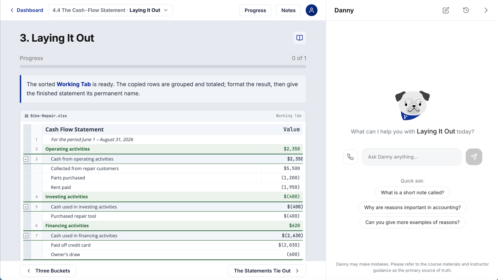
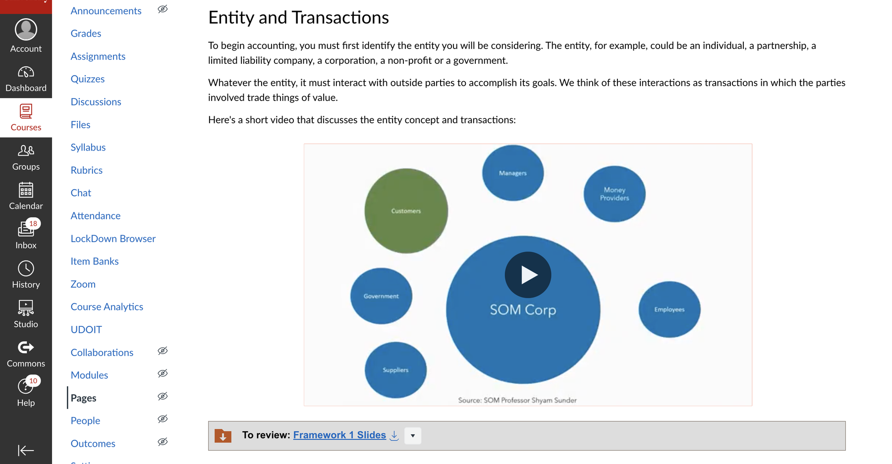
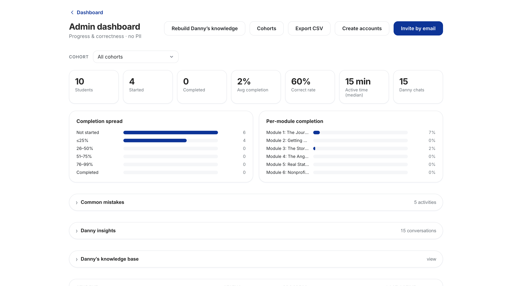

AI 辅助会计入门教学法设计
耶鲁大学管理学院。 围绕一个商业场景和一位 AI 导师重建了会计先修课程，让学生通过真实场景理解概念，而非死记硬背。

概述
耶鲁的会计先修课程每年为 350+ 名即将入学的 MBA 和 EMBA 学生在开始核心课程前做好准备。我们的团队重新设计了课程内容并开发了一位 AI 导师。我负责研究：用户研究、文献综述，以及推动每次迭代的测试轮次，确保设计决策与学习者的实际行为挂钩，而非我们的假设。
问题
项目始于两个担忧：课程仍围绕传统会计学习的体系构建，以及学生不当地 AI 可能会减弱学习效果。

用户研究结合了对 1,279 名受访者的课后调查分析，以及对两位往届学生的访谈，以确定我们为谁设计，以及当前课程需要哪些改进。
将研究中的挫败点映射到设计解决方案
| 挫败点 | 设计响应 |
|---|---|
| 两位受访者都提到了同一个问题：概念悄然保持错误。 | 测验贯穿整个课程，并且 AI 导师根据测验建立每位学生的误解模型。 |
| 调查中呼声最高的改进：解释我的答案为什么错了。 | AI 导师结合问题语境和学生的答案，用模块中相同的术语解释错误原因。 |
| 学生记住了术语，却看不到报表之间如何关联。 | 每个报表与概念都在真实场景中呈现，展示数字从何而来，以及它支持什么决策。 |
解决方案
教学设计
真实报表
非营利组织报表
新的先修课程将会计介绍为通过一个商业场景——开一家自行车维修店——构建起来的东西，而非一套需要记忆的定义和规则。
目标学习成果是一个可迁移的会计心智模型：会计作为源于企业需求的信息系统，能够扩展到不同的组织和经济事件。
为此，我们颠倒了通常的顺序。不是先定义一个概念再应用它，而是每个模块都从一个学生必须在拥有词汇之前进行推理的情境开始。这家店贯穿前四个模块，因此每个新概念都附着在学生已经理解的企业上，而非一个新的抽象例子。
在发现阶段，每个模块都建立在相同的三阶段模型上：体验、发现、正式化。该序列借鉴了基于研究的教学设计策略，包括问题式学习、引导式发现和脚手架。
体验
进入故事，不知道结局。
副业已经变得太乱，无法凭记忆追踪。
发现
一步一步建立会计逻辑。
学生将属于记录的内容分类为“物品”或“承诺”。
正式化
用传统会计语言命名涌现的想法。
会计主体出现，连同资产和负债。
AI 导师设计
这些学生大多初次接触会计，而先修课程是学期开始前的线上课程，当有人卡住时没有讲师在场。为此，我们开发了AI导师Danny。
仪表盘设计
为了更好地了解学生的表现，并帮助课程进行未来迭代，我们设计了一个讲师仪表盘。
仪表盘显示的内容
- 学生学习数据： 记录尝试、答案和错误。
- 难度排名： 按学生出错的地方对页面和问题进行排名，让讲师看到课程中最难的部分。
- 匿名信息： 账户从电子邮件名册创建，学习模式从不与姓名关联。
- Danny 使用情况一览： 参与计数、文本与语音的划分、常见问题主题，以及将问题与背后错误关联的群体摘要。
- 知识库管理： 内容变更时一键刷新 Danny 的知识库，并将所有内容导出到电子表格。

测试
我们在 2026 年 6 月进行了一项有 31 名参与者参与的对照试验：15 人进行学习时使用AI导师Danny，16 人不使用。
这个模块的设置方式让会计看起来不那么可怕。有点像讲故事。不是学习会计的常规方式，但真的很容易跟上，让我保持投入。 试点参与者，有商业背景的学习者
影响
这项工作已提交给耶鲁大学管理学院院长和 CMU 的 Tepper 商学院，课程将于明年面向耶鲁学生推出，并为 Tepper 商学院 的会计课程开发提供参考。
对学习者
先修课程不再是被动解释数字和方程的的视频，而是通过一个可感知的、故事驱动的真实场景引入每个概念。任何背景的学习者都能跟上推理，并将会计恒等式等核心思想作为结论而非需要记忆的公式来理解。
对教学
由于每个活动和导师对话都记录在共享数据库中，讲师可以看到学生实际如何学习材料：他们在哪里犹豫，什么做错了，以及他们向导师提出了哪些概念。他们得到的不是一个一次性交付物，而是一个可以进一步开发的可用模型，以及可供迭代的学习数据。